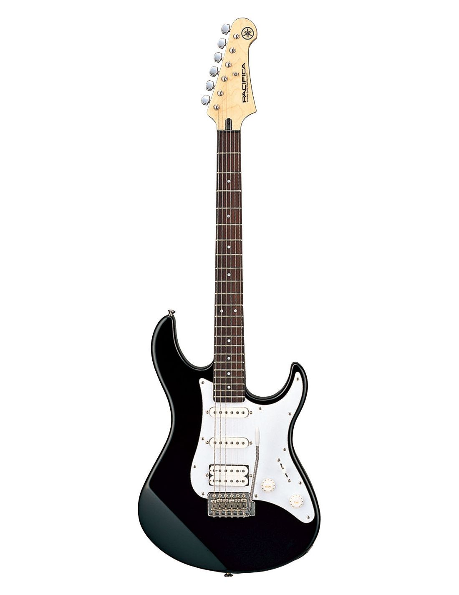
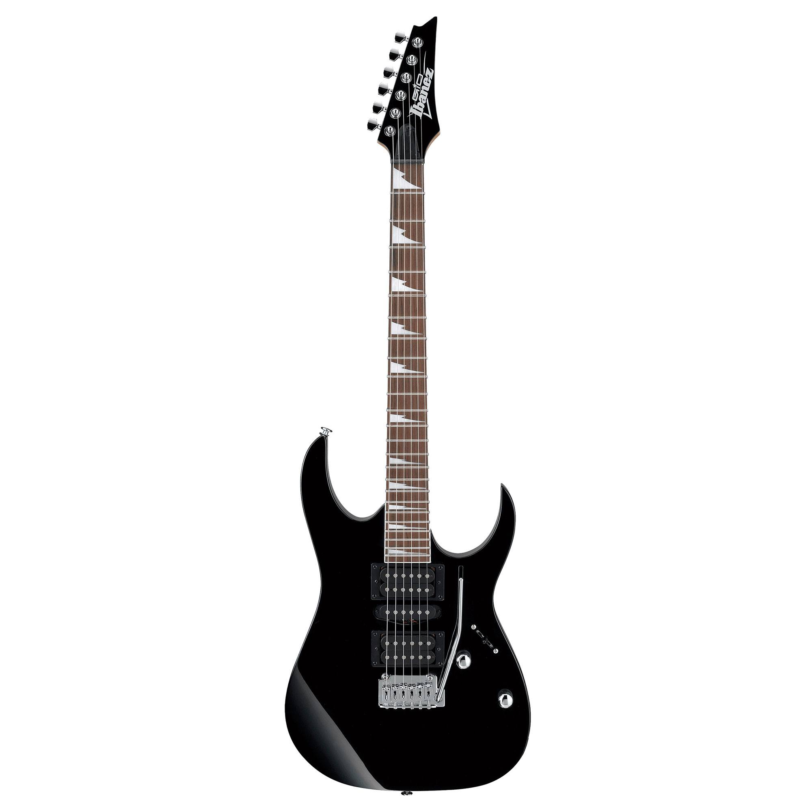
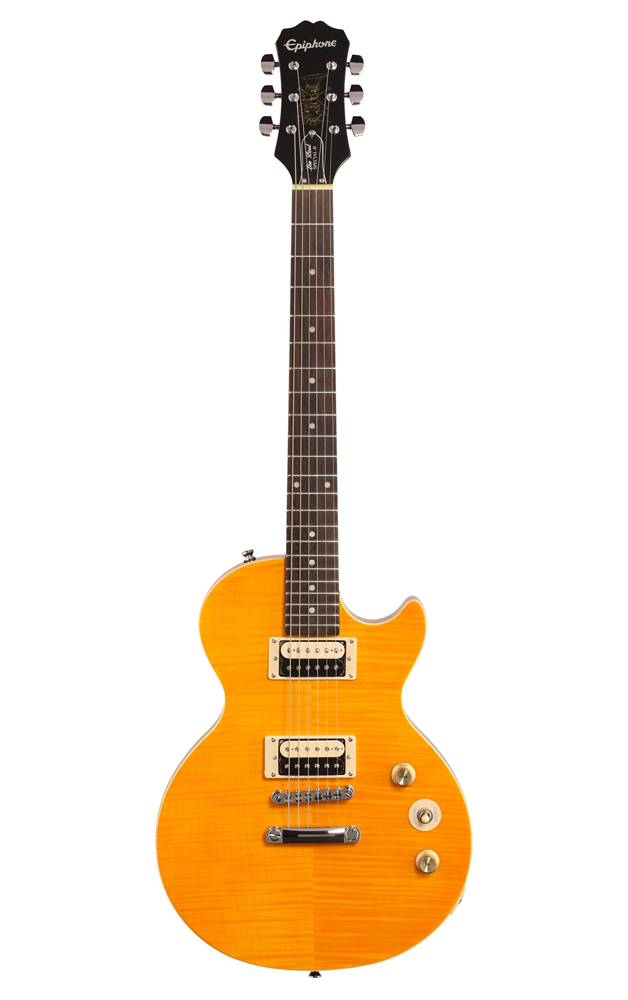

Yamaha Pacifica PA012 BL II
je pristupačna električna gitara s klasičnim dizajnom i udobnim tijelom. Ima dva humbucking magneta za raznolikost zvuka, od dubokih i punih tonova do svjetlijih i jasnijih nota. S tremolo sustavom omogućava eksperimentiranje s bendiranjem žica. Ova gitara je idealna za početnike i pruža kvalitetnu izradu i pouzdanost koju očekujete od Yamahinog instrumenta. Svestrana je za različite glazbene žanrove i odličan izbor za one s ograničenim budžetom.
Ibanez GRG170DX
je električna gitara poznatog proizvođača Ibanez, koja je idealna za rock i metal glazbu. Opremljena je s dva humbucking magneta i jednim single-coil magnetom, što omogućava širok raspon zvukova. Ova gitara ima tanko tijelo, brz vrat i 24 praga, što je odlično za brzo sviranje i solo dionice. S atraktivnim dizajnom i pristupačnom cijenom, Ibanez GRG170DX privlači kako početnike tako i iskusne gitariste koji traže snažan zvuk i performanse.
Epiphone Les Paul Special II
je popularna električna gitara koja nudi odličan omjer cijene i kvalitete. Ova gitara ima tijelo od mahagonija s vrhom od javora, što pruža bogat i topao ton. Dva humbucking magneta omogućavaju snažan i karakterističan Les Paul zvuk, savršen za rock i blues glazbu. Svojim udobnim vratom i 22 praga, ova gitara je lako svirati, čineći je odličnim izborom kako za početnike, tako i za iskusne gitariste. Epiphone Les Paul Special II također dolazi s klasičnim dizajnom i izgledom koji odašilje vintage estetiku.